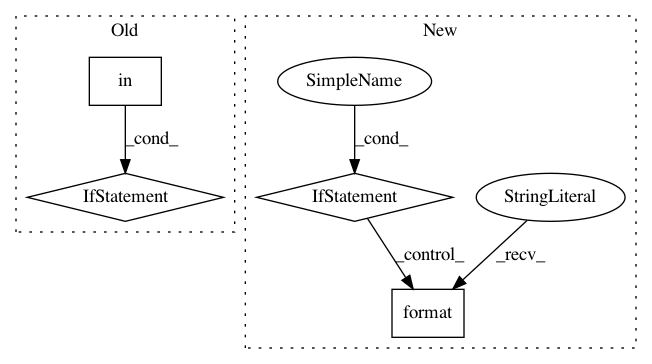

a85342eee955a8630719678d96cd96e96cdcf6b2,plotnine/geoms/annotation_stripes.py,annotation_stripes,__init__,#annotation_stripes#,31
Before Change
def __init__(self, **kwargs):
if "direction" in kwargs:
allowed = ("vertical", "horizontal")
if ((not isinstance(kwargs["direction"], str))
or (kwargs["direction"] not in allowed)):
raise ValueError("direction must be one of %s" % (allowed, ))
self._annotation_geom = _geom_annotation_stripes(
**kwargs)
After Change
def __init__(self, fill=("//AAAAAA", "//CCCCCC"), fill_range=False,
direction="vertical", extend=(0, 1), **kwargs):
allowed = ("vertical", "horizontal")
if direction not in allowed:
raise ValueError(
"direction must be one of {}".format(allowed))
self._annotation_geom = _geom_stripes(
fill=fill, fill_range=fill_range, extend=extend,
direction=direction, **kwargs)
In pattern: SUPERPATTERN
Frequency: 3
Non-data size: 4
Instances
Project Name: has2k1/plotnine
Commit Name: a85342eee955a8630719678d96cd96e96cdcf6b2
Time: 2019-08-14
Author: has2k1@gmail.com
File Name: plotnine/geoms/annotation_stripes.py
Class Name: annotation_stripes
Method Name: __init__
Project Name: Cadene/bootstrap.pytorch
Commit Name: 97d7fe68af9f69eac7fad77c7bf0d447f1abbb82
Time: 2018-07-16
Author: rcadene@gnode-au11-01.cm.cluster
File Name: bootstrap/run.py
Class Name:
Method Name: run
Project Name: nerox8664/pytorch2keras
Commit Name: 1cf4c73059ba4435f37a93a316edbd426263cbf0
Time: 2018-12-20
Author: nerox8664@gmail.com
File Name: pytorch2keras/converter.py
Class Name:
Method Name: pytorch_to_keras